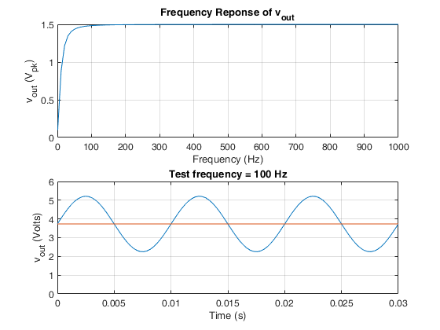

Contents
Housekeeping
clc clear
Notes
none
symbols
syms c1 f r1 r2 r3 vcc vin vin_dc vin_ac vout vout_ac vout_dc ;
assumptions
none
equations
% Equivalent resistance when resistors R1 and R2 are connected in parallel rp_r2r3 = 1/(1/r2 + 1/r3); % C1's steady-state capacitive reactance for a sinewave signal having % frequency 'f'. (NB: xc1 is a complex value.) xc1 = 1 ./ (1i .* 2 .* pi .* f .* c1); % Use the voltage divider equation to determine the DC component of the % output signal, vout_dc % NB: vin_dc is blocked by capacitor C1; therefore, vout_dc's value does % not depend on vin_dc's value. vout_dc = vcc * r3 / ( r2 + r3 ); % Use the voltage divider equation to determine the AC component of the % output signal, vout_ac % NB: vout_ac is a complex value. vout_ac = vin_ac .* rp_r2r3 ./ (r1 + xc1 + rp_r2r3);
substitutions
% Design values c1_ = 1e-6 ; % farads r1_ = 5230 ; % ohms r2_ = 15390 ; % ohms r3_ = 7930 ; % ohms vcc_ = 5 ; % volts vin_dc_ = 0 ; % volts dc vin_ac_ = 3 ; % volts ac, peak amplitude % Test frequencies, Hz f_ = linspace(1,1000); % (<- generates 100 evenly-spaced frequencies) % vout's DC value as a function of r2, r3, and vcc f_vout_dc = matlabFunction( vout_dc ); % @(r2,r3,vcc) % vout's AC value as a function of c1, f, r1, r2, r3, and vin_ac f_vout_ac = matlabFunction(vout_ac); % @(c1,f,r1,r2,r3,vin_ac)
solutions
% NB: vout = vout_ac + vout_dc % Calculate vout's DC component vout_dc_ = f_vout_dc( r1_, r2_, vcc_ ) % Calculate the magnitude of vout's AC component at each test frequency % NB: abs_vout_ac does not include the output signal's DC component. abs_vout_ac_ = abs( f_vout_ac(c1_, f_, r1_, r2_, r3_, vin_ac_) ); % Plot vout_ac's frequency response subplot(2,1,1) plot(f_, abs_vout_ac_) grid on title('Frequency Reponse of v_{out}') xlabel('Frequency (Hz)') ylabel('v_{out} (V_{pk})') % Plot vout for a specific test frequency, f_test % NB: Try setting f_test to different values, e.g., 1 Hz, 10 Hz, 100 Hz f_test = 100; % Hz cycles = 3; abs_vout_ac_ = abs( f_vout_ac(c1_, f_test, r1_, r2_, r3_, vin_ac_) ); t = linspace(0,cycles/f_test); % seconds v_out = abs_vout_ac_ * sin(2*pi*f_test*t) + vout_dc_ ; % volts subplot(2,1,2) plot(t, v_out) % vout yticks(0:1:6) grid on hold on plot(t, ones(size(t))*vout_dc_) % vout_dc hold off title_text = "Test frequency = " + f_test + " Hz" ; title( title_text ) ylim([0 6]) xlabel('Time (s)') ylabel('v_{out} (Volts)')
vout_dc_ =
3.7318
